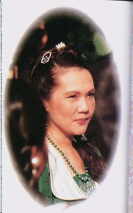

Le 3 novembre 1989 (Original en anglais)
Frères et sœurs, prions quelques minutes notre propre Dieu, notre propre Moi ou Nature de Bouddha. Prions pour que notre séminaire vous soit utile. Merci.
Frères et sœurs, vous êtes les enfants de la Grande Intelligence, de la Grande Sagesse. J'imagine que vous savez quelque chose sur vous-mêmes. Ressentez-vous parfois la grandeur dans votre cœur, le Père ou la Mère, qui est le Créateur ou la Nature de Bouddha d'où nous venons et où nous retournerons, si c'est notre désir ?
Chaque individu a le libre-arbitre, la liberté de choisir entre ce monde et le royaume supérieur. La plupart des gens préfèrent rester ici et d'autres préfèrent rentrer chez eux; retourner au Royaume de Dieu ou au pays de Bouddha. C'est cela -- ne nous laissons pas dévier de ce que nous voulons. Si nous préférons rester sur cette Terre, être utiles à l'humanité et aux citoyens du monde, alors nous devons aussi penser à certaines conditions, sans lesquelles notre vie, notre séjour dans ce monde ne seraient pas très agréables. Et si nous souhaitons retourner au Royaume de Dieu ou devenir un Bouddha, retourner au pays de Bouddha, alors nous devons aussi penser aux facteurs qui nous permettront de nous y rendre.

Parlons tout d'abord des conditions qui nous permettent de rester dans ce monde tout en menant une vie agréable et confortable, si certains d'entre vous préfèrent rester. Notre planète est un "vaisseau" très beau, un "vaisseau" qui transporte de nombreux êtres sensibles dans l'espace en faisant des cercles alentours. Notre planète donne beaucoup de conforts et de joie, nous donne de nombreux trésors, et nous donne de nombreux moyens pour vivre. Mais nous avons aussi le devoir de préserver la puissance de notre Mère Terre afin qu'elle puisse nous aider.
Toutes les religions nous ont enseignés ce qu'il faut faire pour cela. Mais si vous le permettez, je voudrais profiter de l'occasion pour vous rappeler quelque chose; également à ceux qui écouteront les cassettes de cette conférence dans le futur.
S'il vous plaît, ne me prenez pas pour votre conférencière, votre professeur, votre Maître ou qui que ce soit. Oubliez tout ceci. Voyez-moi simplement comme votre frère, votre sœur, votre fille, une personne qui vous veut du bien, une personne sincère qui voudrait offrir ce qu'elle a de mieux. C'est comme lorsque vous êtes ingénieur, vous essayez d'aider la société avec vos connaissances techniques. Si vous êtes médecin, vous essayez d'aider à élever la société en éliminant la souffrance de l'humanité, en soignant ses maladies, etc.
Je suis née avec cette tendance d'avoir la connaissance spirituelle, et dans la mesure où j'ai atteint une certaine connaissance, je suis obligée de la rendre. Tout comme ce que nous avons appris au collège en mécanique ou en soins médicaux, nous devons le rendre à la société plus tard. Alors, je fais simplement mon devoir, et je vous suis reconnaissante de m'avoir donné la permission et la bienvenue pour faire mon travail.
Afin de redonner à notre société des conditions agréables, nous devons observer certains préceptes ainsi qu'un respect et une compréhension mutuelle. La façon dont la plupart des gens mènent leur vie leur est nuisible, et est nuisible aux autres êtres visibles et invisibles. Si nous ne croyons pas en l'existence d'autres êtres invisibles, au moins nous croyons en l'existence de notre propre race, l'humanité et de tous les animaux qui sont les citoyens de la Terre.
Récemment, il y a un courant qui pousse les gens à devenir végétariens; et c'est bien, car comme nous le savons, tout transporte de l'énergie. Chaque action est enregistrée. Rien n'est perdu, comme cela peut être prouvé par la science. Aussi, si nous avons causé quelque chose de violent, alors l'atmosphère violente restera autour de nous, autour de notre planète et cela cause certaines catastrophes. C'est pour cette raison que nous nous demandons toujours "Comment se fait-il qu'il y ait tant de guerres?", "Comment se fait-il qu'il y ait autant de tremblements de terre, tant de catastrophes sur notre planète?"
Il n'y a rien sans rien. La Bible le dit très clairement:»Ce que vous semez, vous le récolterez.» Mais nous ne savons pas ce que nous avons semé, nous voyons uniquement ce que nous récoltons quelquefois. Parce que notre intelligence est bien limitée. D'après la science, nous n'utilisons que 5% de notre intelligence. Si nous n'utilisons que 5%, alors comment pouvons-nous connaître tant de choses? Il doit y avoir beaucoup de choses que nous n'avons pas découvertes, que nous ne comprenons pas. Il nous faut accepter cela. Nous ne pouvons pas y échapper.
Il y a 2 600 ou 2700 ans, Bouddha a dit à Ses disciples:»Faites attention à l'eau que vous buvez. Vous devez filtrer votre eau avant de la boire et répétez les noms sacrés pour éviter de tuer les êtres dans le verre d'eau « Il a dit qu'il y avait 84 000 êtres dans un verre d'eau fraîche. Enfin, 84 000 ça veut dire beaucoup dans la coutume indienne. Ainsi, Bouddha a dit à Ses disciples qu'il fallait filtrer l'eau.
En Inde, à cette époque, filtrer l'eau n'était pas une chose aussi courante qu'aujourd'hui. Mais le Bouddha avait déjà vu, en avance sur Son temps, qu'il y avait des bactéries dans l'eau. Bien sûr, les gens de Son époque avaient beaucoup de mal à le croire, car on ne pouvait prouver qu'il y avait des êtres sensibles ou des soi-disant bactéries dans un verre d'eau fraîche. Mais de nos jours, grâce au progrès scientifique, on peut le prouver très facilement.
C'est bien que notre société soit aujourd'hui plus avancée, plus intelligente. La recherche scientifique et des efforts assidus ont amené beaucoup de conforts dans nos vies. Mais nous pourrions nous demander: Pourquoi n'avions-nous pas cela il y a 2 000 ans, pourquoi n'avions-nous pas tous ces appareils électroniques? N'étions-nous pas aussi intelligents? Nous n'étions pas avancés dans la science. Alors s'il y a un Dieu, pourquoi n'a-t-Il pas rendu les gens intelligents auparavant? Qu'est-il arrivé aux enfants de Dieu il y a 2 000 ans? Dieu les a-t-Il traités comme des enfants adoptés? Non comme des enfants véritables?
En fait, ce sont les efforts perpétuels de ces soi-disant pratiquants, des porteurs de lumière - les yogis, les êtres réalisés, les mahatmas et les maîtres - qui ont fait progresser ce monde. Tous ces êtres supérieurs sont très bénéfiques, et travaillent dans des dimensions supérieures. Même les yogis de niveau inférieur, les pratiquants, les porteurs de lumière, eux aussi apportent leur contribution au changement atmosphérique global, afin d'apporter notre condition terrestre d'aujourd'hui. Si ces pratiquants, ces porteurs de lumière n'existaient pas, et n'avaient pas existé à travers les siècles, notre monde ne serait pas ce qu'il est aujourd'hui.
Ainsi, nous sommes reconnaissants envers la science et les découvertes des scientifiques pour notre confort et pour nos appareils avancés. Ils ont apporté du confort dans notre vie. Mais nous oublions qui est le véritable bienfaiteur derrière tout cela, celui qui est invisible, qui était à l'origine de cette condition. Si les pratiquants et les porteurs de lumière n'avaient pas été présents dans notre monde, le monde serait devenu un enfer. Il n'y aurait aucun symbole de vertu, aucun exemple de vie supérieure, pas de lumière. Il serait comme les campagnes sans électricité, tout serait sombre comme dans le passé.
Par conséquent, si notre monde diffère de l'enfer, c'est parce que nous avons encore des porteurs de lumière; et si notre monde est différent du paradis, c'est parce que les porteurs de lumière, les gens vertueux sont moins nombreux. S'il n'y en avait pas du tout, cela serait l'enfer. L'enfer est l'absence de lumière, de vertus. Si nous avions plus de porteurs de lumière, alors notre monde serait un paradis. C'est ce qui fait toute la différence.
Tout le monde aimerait vivre dans le confort et dans un monde paradisiaque, mais on ne fait pas tous l'effort de construire un paradis pour soi-même et pour son entourage. C'est pourquoi nous devrions relire les écrits religieux chrétiens ou bouddhistes, pour savoir comment construire un environnement céleste pour notre monde. Je ne veux pas trop insister sur cela. Peut-être que cela vous ennuiera parce que je vous dirai:»Je sais déjà tout cela. « Vous me diriez:»Je connais la Bible de A à Z. Je suis chrétien, pas besoin de me le dire.
Et les Bouddhistes me diraient aussi:»Je connais les cinq préceptes du Bouddha. Je suis une personne laïque, j'ai pris refuge dans le Bouddha il y a environ quarante ans. J'ai un nom de Dharma, un nom bouddhiste spécial. « Un nom bouddhiste est comme le nom de baptême chez les chrétiens, un nom sacré. Marie Untel ou Joseph Untel. Selon la tradition chrétienne, en plus de votre nom, vous avez un prénom chrétien.
Dans la tradition bouddhiste il y a quelque chose de similaire. Lorsque vous prenez refuge dans le Bouddha, la Sangla et le Dharma on vous donne également un nom. Un joli nom comme lumière parfaite, lumière du Bouddha, lumière de la sagesse, sagesse parfaite, vertus parfaites, libération, grande âme, ou autre chose.
Il est bien d'avoir ces noms, que l'on soit chrétien ou bouddhiste. Mais il est encore mieux de vivre en se montrant digne de ce nom. Si nous portons le nom de Saint Francis, alors il serait bon de lire la biographie de ce saint, pour voir ce qu'il a fait pour devenir saint, comment il a vécu et pourquoi on le vénère depuis des siècles partout dans le monde. Si nous avons le nom Ananda — Ananda signifie félicité, extase, bonheur, joie infinie en Sanscrit selon la tradition Hindoue — alors nous devons essayer d'atteindre cette félicité par la vertu, par une pratique assidue de contemplation intérieure de notre bonheur intérieur.
Notre vrai Moi est cette félicité, cette vertu, ce contact avec Dieu. Si nous oublions notre vrai Moi alors nous sommes très seuls et nous souffrons beaucoup de la dureté de ce monde. Une fois que nous sommes en contact avec ce vrai Moi, les choses prennent un meilleur tournant, et nous savons clairement quelle direction prendre et quelle chose nous devons nous offrir à la société et à l'univers.
Tout ce que nous faisons affecte le monde et notre prochain. Chaque religion nous dit que toutes les choses, tous les êtres sont un par essence. Tout comme notre corps a plusieurs parties. Si nos mains nous font mal, cela affecte également notre corps entier. C'est parce que le corps universel est si grand, et que nous, les nombreux êtres dans ce grand corps ne peuvent pas comprendre, ne peuvent pas voir la totalité du corps universel, ainsi nous ne pouvons pas croire que nos actions touchent tous les autres êtres. Si nous développons l'œil céleste, l'œil de sagesse, nous pouvons voir cela pour nous-mêmes et découvrir que nous sommes en réalité en contact avec tous les êtres. Et alors nous ferons très attention à ce que nous faisons. Jésus Christ, Bouddha, avaient développé cet œil de sagesse. Par conséquent, Ils savaient qu'elles étaient les lois de l'univers; ils savaient quoi faire pour rendre notre monde plus beau, nos vies plus agréables, plus confortables et plus à notre goût. Par conséquent, ils ont établi les règles de la demeure céleste, quant à notre comportement et au chemin que nous devons suivre dans notre vie quotidienne.
Ces règles sont très précieuses, c'est ce que nous appelons les préceptes ou les commandements de Dieu. Si nous les suivons, nos vies seront beaucoup plus douces. Mais il s'agit de notre connexion à ce monde, de notre contribution à ce monde.
Si nous suivions les préceptes, étions gentils envers notre prochain, aimerions nos ennemis etc., le monde serait en paix, un endroit où il fait bon vivre, et aurait une longévité bien plus grande. Et si notre monde est en paix, cela affectera également nos vies et nous nous sentirons également très paisibles. Si nous vivons dans une maison et que cette maison est délabrée ou en piteux état, alors notre santé et notre confort seront affectés. De la même façon, si nous vivons dans ce monde plein de chaos et de troubles, nous n'aurons pas de paix. Ainsi, aider le monde, c'est nous aider nous-mêmes.
Cela, c'est seulement si nous voulons rester dans ce monde. Mais si nous voulons retourner au Royaume de Dieu ou au pays de Bouddha, ou devenir Bouddha, il existe des conditions et des règles plus subtiles que l'on doit connaître. En plus de respecter ces préceptes, de mener une vie vertueuse, d'être tolérant et d'aider les autres, nous devons être en contact avec le Royaume de Dieu.
Qu'est-ce que le Royaume de Dieu? On peut le voir très facilement, à condition d'y consacrer un peu de temps et d'efforts et de souhaiter sincèrement s'y rendre. Vous pouvez trouver le Royaume de Dieu grâce à une pureté, une sincérité et un dévouement à toute épreuve. Mais la meilleure façon, et la plus rapide, est de trouver quelqu'un qui a déjà accès au Royaume de Dieu et que vous n'avez qu'à suivre. Il vous prend par la main et vous emmènes là-bas.
C'est pourquoi Jésus Christ devait naître dans ce monde afin de mener dans leur palais céleste certains de Ses contemporains, les plus sincères, les amoureux de Dieu. C'est pourquoi Bouddha a dû descendre dans ce monde afin d'ammener en Terre de Bouddha certains de Ses pratiquants.
Dans chaque pays, à chaque âge de l'existence de ce monde, il y aura toujours des personnes comme Jésus ou Bouddha. C'est une bonne nouvelle. Nous adorons Jésus et Bouddha et c'est très bien. Mais nous savons rarement que nous pourrions devenir aussi grands que Jésus et Bouddha. C'est en réalité le seul but de notre venue dans ce monde. C'est pourquoi Jésus a insisté dans la Bible:»Tous les miracles que j'accomplis aujourd'hui, vous pourrez faire encore mieux demain. « Il nous l'a promis. Nous pouvons devenir aussi grands qu'Il L'était, et même plus grands.
Bouddha a également dit:»Vous pouvez tous devenir Bouddha, je suis déjà devenu Bouddha, vous deviendrez Bouddha. « Personne n'a revendiqué le monopole, la possession unique de l'état de Bouddha. Personne ne peut faire cela. Celui qui le fait ne connaît rien au Bouddhisme et à la Chrétienté.
Un véritable Christ est une puissance qui peut être transmise d'une personne à une autre. C'est comme lorsque vous gagnez beaucoup d'argent, vous pouvez en offrir autant que vous le voulez. De même que nous avons des possessions matérielles, nous pouvons aussi avoir le pouvoir spirituel, la possession invisible que nous pouvons transmettre. Elle n'est pas "distribuée" parce que nous l'avons tous à l'intérieur de nous-mêmes. Il suffit d'un expert pour l'ouvrir.
C'est comme lorsque nous entrons dans cette pièce; nous ne sommes pas habitués à l'installation électrique, avec tous les boutons qui se trouvent dans la pièce. Alors, nous devons essayer de découvrir par nous-mêmes, ou choisir la façon la plus rapide: aller voir le responsable de cette pièce, celui qui sait tout. Il est là tous les jours. Il sait où se trouve l'armoire électrique, il sait quelle lumière est connectée avec quel interrupteur. C'est la meilleure façon. Alors, il peut l'ouvrir en quelques secondes, allumer la lumière et vous aider à vous connecter avec toutes les choses dont vous avez besoin pour la conférence d'aujourd'hui.
De la même façon, le Christ ou le Bouddha ont connu le Royaume céleste. Ils sont venus et sont repartis plusieurs fois, voire plusieurs millions de fois. Alors, Ils peuvent nous aider à nous y rendre et à nous familiariser avec tout ce dont nous avons besoin. Une fois que nous entrons dans cette pièce et en trouvons le directeur, nous pouvons trouver tout ce dont nous avons besoin.
De la même façon, Jésus nous a dit de chercher d'abord le Royaume de Dieu et que toutes les choses nous serons données de surcroît. Le Royaume de Dieu est l'intelligence innée que la plupart d'entre nous n'utilise pas. Je vous ai déjà dit que nous n'utilisions que 5 % de notre puissance cérébrale. Or, si nous avons accès à la totalité, à 100 % du pouvoir cérébral, nous pouvons accomplir de grandes choses. En utilisant 5 %, nous pouvons construire des avions, des fusées pour aller sur la Lune, aller dans d'autres galaxies, faire des choses merveilleuses, guérir des maladies, découvrir un tas de grandes choses, inventer des ordinateurs et des machines et produire des voitures rapides et des jumbos jets.
Mais 95% restent inutilisés. Si nous éveillons ce pouvoir de l'intelligence, alors nous connaîtrons tellement plus de choses, nous pourrons accomplir et inventer tellement plus de choses, nous pourrons créer d'innombrables choses.
C'est ce que signifie le Royaume de Dieu, ou la Sagesse de Bouddha ou la Nature de Bouddha. Mais en dehors de cela, nous avons encore plus. Le pouvoir subtil derrière cette puissance cérébrale est ce que nous appelons le Pouvoir de l'âme. C'est notre "visage" réel, notre personne réelle. Nous n'avons aucun doute quant à l'existence d'une personne réelle dans notre corps; que nous ne sommes pas ce corps physique. Le corps physique n'est qu'une maison dans laquelle nous vivons quand nous sommes dans ce monde — une chambre d'hôtel. Sinon pourquoi lorsque nous mourons, le corps est-il toujours là et que nous ne pouvons plus bouger? C'est qu'il doit y avoir quelque chose d'autre derrière le corps, derrière le cerveau, une chose qui permette à cette machine de bouger, de penser, de marcher, de manger et de dormir. C'est notre Moi Réel.
Mais le Moi Réel est caché derrière le voile de ce que nous appelons l'illusion de maya en Sanskrit. L'illusion est une sorte de jeu qui nous fait oublier notre vrai Moi. C'est comme lorsque nous regardons la télévision, un film ou une pièce de théâtre si intensément que nous nous oublions nous-mêmes. Alors, nous pleurons, nous rions, et ressentons la tristesse et la peur avec les personnages de la scène. Nous oublions qui nous sommes, un sénateur ou la femme d'une personne très importante. Nous nous collons à l'écran, rions et pleurons avec ces gens, nous nous fâchons et nous nous amusons. Et quand la pièce de théâtre ou le film est terminé nous retournons à la réalité, nous retournons à ce qui nous sommes et rentrons chez nous. Nous ne restons pas au théâtre plus longtemps, ni collés à la télévision.
Le théâtre, les films et la télévision ne sont que des choses temporaires, pourtant ils peuvent quand même attirer de nombreuses personnes. Vous connaissez le problème des gens qui sont dépendants de la télévision. Quelquefois, vous l'allumez et vous ne pouvez pas l'éteindre. Peu importe ce que c'est, vous devez la regarder. C'est très fascinant, ça change toujours, créant toujours une certaine excitation et toujours renouvelé. Et quelquefois nous oublions nos devoirs, nos tâches et notre travail, et nous regardons la télévision.
Notre vie est une scène encore plus grande, et c'est un spectacle plus long. Il n'est pas étonnant que nous oubliions notre propre Moi. Notre vie est plus intéressante encore, plus intense, plus colorée, plus dramatique et plus enchanteresse que les spectacles de théâtre. Par conséquent, nous restons collés à cet écran de la vie et oublions qui nous sommes. Voilà tout ce qu'il y a derrière cette pièce et ces illusions. Dès que l'illusion s'évanouit, la pièce s'arrête. Alors nous sommes éveillés.
Lorsque nous sommes éveillés, nous sommes illuminés. Et si nous sommes complètement éveillés, et rejetons toutes ces impressions du spectacle théâtral, alors nous ne sommes plus chagrinés, ne pleurons plus, ne rions plus, et nous disons que nous sommes devenus comme Christ et comme Bouddha. Nous savons que tout est un rêve au moment où nous sommes complètement éveillés; alors nous sommes puissants. Nous pouvons contrôler tout ce que nous avons besoin de contrôler, mais nous laissons libres ceux qui ne veulent pas être contrôlés. Nous laissons les choses se faire mais nous pouvons faire tout ce que nous voulons, non pas des choses néfastes, uniquement de bonnes choses.
Une fois que nous sommes complètement éveillés ou illuminés, nous avons toute la sagesse qui est innée en nous-mêmes. Avec nos 5% d'intelligence, de capacité cérébrale, nous pouvons créer déjà tant de grandes choses, comme l'Empire State Building, plein de choses avancées et merveilleuses. Avec cette sagesse innée et nouvellement retrouvée, nous pouvons créer le paradis; nous pouvons créer un environnement confortable, la vie et tout ce que nous souhaitons.
La plupart d'entre vous ou certains d'entre vous ont certainement entendu parler des gens qui font des miracles en Inde, en Chine ou peut-être même en Amérique. Il ne s'agit nullement de merveilles. C'est seulement qu'ils peuvent utiliser ce pouvoir créatif. Ils connaissent un peu plus de choses que la personne ordinaire quant à la manière d'utiliser leur intelligence. Tout comme nous utilisons 5% de notre pouvoir cérébral pour créer des avions, des bateaux, des fusées, des appareils scientifiques, etc., etc.; nous pouvons utiliser un peu plus de ce pouvoir créatif afin de créer des choses plus avancées, plus merveilleuses et plus inimaginables, des choses excellentes. C'est tout ce qui se trouve au paradis, tout le confort et tous les miracles. Il ne s'agit que du pouvoir créatif, et nous avons tout cela en nous-mêmes.
Utiliser ce pouvoir créatif pour faire seulement des fleurs, des oranges, des bonbons, ce n'est rien. C'est une toute petite chose dans le jeu créatif de notre puissance cérébrale. Plus nous savons, plus nous pouvons créer de grandes choses. Les scientifiques ont créé de nombreuses machines merveilleuses et des appareils pour servir le genre humain; mais si les scientifiques ont davantage accès au Royaume de la Sagesse, ils pourront créer le paradis à partir de rien. Autant que nous pouvons utiliser les matériaux de cette Terre pour créer des engins spatiaux et toutes sortes de véhicules et d'appareils, nous pouvons utiliser également des matériaux invisibles pour créer toutes sortes de choses dont nous avons besoin pour cette vie et la suivante.
Par conséquent, Jésus a dit:»Recherchez d'abord le Royaume de Dieu et toutes les choses vous seront données de surcroît. « C'est pour cette raison que Bouddha a renoncé à tout: au royaume terrestre, aux possessions et aux plaisirs; parce qu'Il possédait alors beaucoup plus. Il savait qu'Il était plus riche que n'importe quel roi de cette Terre. Autrement, comment quelqu'un pourrait-il mener une vie de mendiant pendant quarante-neuf ans lorsque le royaume de Son pays était à portée de main? Il aurait pu à n'importe quel moment reprendre le trône, devenir un grand roi, régner sur Sa nation, et apprécier tous les conforts. Mais Il ne l'a pas fait parce qu'Il était plus riche qu'au moment où Il l'avait quitté.
Il avait tout ce qu'Il voulait. Il pouvait Se rendre dans n'importe quel paradis, n'importe quelle terre, planète, ou galaxie; et avait pleins de trésors, tout ce qu'Il voulait. Mais Il ne les voulait même pas. Lorsque nous connaissons les secrets de l'univers, que nous possédons tous les trésors des cieux, nous ne désirons plus rien d'autre. Nous devenons heureux en nous-mêmes; ce qui arrive, arrive. Nous devenons comme un enfant. Nous ne désirons pas, et les désirs de ce monde ne brûlent plus nos cœurs. Cela n'a plus aucun contrôle sur nous. Voilà l'avantage de devenir illuminé.
Certaines personnes ont également l'idée erronée selon laquelle, si nous voulons devenir illuminés, ou que nous voulons pratiquer, nous devons devenir moine ou nonne ou aller aux Himalayas. Je le pensais aussi. Je pensais que je devais faire cela. Mais j'étais stupide. A l'époque je n'étais pas illuminée. Vous n'avez pas besoin de faire cela. Nous pouvons vivre au sein de notre famille, continuer nos tâches terrestres et devenir illuminés en même temps. Tout comme nous pouvons accomplir beaucoup avec nos mains et notre pouvoir cérébral. Nous pouvons également faire des travaux terrestres et devenir illuminés.
Avec l'intelligence limitée que nous avons maintenant (5% du pouvoir cérébral), nous pouvons quand même accomplir certaines tâches. Comme lorsque vous êtes médecin, vous pouvez toujours faire pousser vos légumes dans le jardin quand vous rentrez chez vous, vous pouvez même aider votre femme à nettoyer la moquette ou vous pouvez aussi faire toutes sortes d'activités. A présent, imaginez que vous avez plus de sagesse, alors vous pouvez en faire un peu plus, vous ne pouvez pas en faire moins. Nul besoin de renier le monde afin d'accomplir la volonté du Ciel. Vous ne pouvez que faire plus et offrir plus; vous n'avez pas besoin de diminuer votre responsabilité.
Voilà la logique de l'illumination. Mais puisque je suis devenue une nonne comme ça, je m'y suis habituée, alors je reste comme ça. Cela ne me fait pas de mal du tout. Mais nous n'avons pas besoin de faire ça. Nous pouvons faire beaucoup avec notre sagesse. Elle englobe de nombreuses choses. Nous pouvons aimer Dieu et aimer notre famille en même temps. L'amour de Dieu n'empiétera pas sur l'amour pour notre famille; parce que si Dieu est amour, si Dieu est compassion, alors les membres de notre famille doivent être inclus, non pas exclus. Nous pouvons même inclure plus de personnes. Au lieu de n'aimer que notre famille (femme et mari), nous pouvons également aimer nos voisins, nos ennemis. Nous devenons ainsi après l'illumination.
Alors, Jésus a dit:»Aimez vos ennemis. « Ce qu'Il a dit n'était pas de simples paroles pour prêcher. Il l'a véritablement expérimenté. Après l'illumination complète, vous ne ressentez plus de haine pour quiconque et vous voyez les choses sous un meilleur jour. Vous voyez pourquoi les gens vous font certaines choses, pourquoi les gens font certaines choses à telle personne. Vous ne vous sentirez plus coupable pour ce que vous faites, et vous n'aurez plus de haine envers quiconque vous blesse, parce que vous pourrez voir la cause et les conséquences de toutes choses dans l'univers. C'est ainsi que nous pouvons abandonner la haine, aimer notre prochain et notre ennemi. Il n'est pas facile de dire aux gens d'aimer leur ennemi et qu'ensuite ils les aiment. Ils comprennent le message, mais le mettre en pratique est une chose différente. Il est facile de citer le Bouddha et de dire: «Tous les êtres sont purs de nature. Vous n'avez aucun péché. Il n'y a pas de mal, ni de bien.» Mais il est difficile de convaincre quelqu'un de ne pas se sentir coupable, parce qu'il ne voit pas la cause et l'effet. Ils ne peuvent pas faire les choses sans ego, et ensuite on les blâme pour cela.
Une fois que nous sommes illuminés, nous voyons les choses de plus haut, avec une intelligence supérieure, et nous pouvons voir que rien n'arrive par accident, ou que rien n'est totalement notre faute. Mais il est difficile de vous expliquer cela. Il est plus facile de recevoir l'illumination que de l'expliquer.
Si nous entendons le nom de Bouddha ou le nom de l'enseignement dans les écritures, nous aurons du mérite, des vertus afin de renaître au paradis. Autrement nous allons en enfer. Alors, les gens nous disent: Ah oui? Je ne crois pas vraiment à l'enfer, mais de toute façon il y en a un. C'est juste que je ne m'y rendrai pas, alors je n'y crois pas.
Il existe la loi de l'enfer et la loi du ciel. La loi de l'enfer est une classe très inférieure et a pour effet d'attraper les gens qui transmigrent dans cette illusion. La loi du paradis est celle des bénédictions pleines de grâces et de l'amour, et du pardon inconditionnel, qui ramèneront les gens au Royaume de Dieu ou à la Terre de Bouddha, pour qu'ils apprécient le bonheur qui leur est dû et une joie éternelle. La loi de l'enfer, ou de ce monde, est gouvernée par le roi du maya qui est ce que nous appelons le "Directeur de l'illusion", le directeur derrière la scène du jeu de l'illusion. La loi du ciel et le Royaume du Bouddha sont gouvernés par ces êtres gracieux, pleins d'amour, compatissants et miséricordieux qui sont des associés de Dieu Tout-Puissant ou du Très Grand Bouddha.
Lorsque nous appelons Dieu de différents noms cela n'a pas d'importance. Vous pouvez appeler votre femme "ma chérie", "ma tarte aux pommes", "mon bonbon en sucre" ou "mon petit gâteau au miel", ce que vous voulez. De la même façon, nous devons permettre à des gens de mentalité différente et de préférences différentes d'appeler Dieu par des noms différents. Cela est très logique. Je suis vraiment surprise que la plupart des gens ne comprennent pas cela et se battent pour des noms. Peu importe que vous appeliez votre femme "biscuit " et que le voisin appelle la sienne "tarte aux pommes". C'est la même chose. Que nous appelions Dieu Allah, Jéhovah, Nature supérieure de Bouddha, Anuttara-Samyak-Sambodha, Tout-Puissant, Bien-Aimé, Père, Mère, Créateur, Dieu ou autre, où est le problème?
Par conséquent, de nombreuses personnes pensent que je prêche plusieurs religions en même temps. Non, non. Je n'en prêche qu'une: celle de la Vérité, de la Sagesse, de l'amour. Ce que nous appelons Dieu Tout-Puisssant ou le Bouddha supérieur est notre sagesse, notre pouvoir de survie, l'intelligence que nous pourrions utiliser à n'importe quel moment si nous le souhaitons.
Au cas où nous ne saurions pas comment ouvrir la porte de la sagesse, nous pouvons partir à la recherche d'un expert. Voilà tout, c'est simple et très terre à terre. Nous n'avons pas besoin de rendre les choses si mystiques, si difficiles à croire et hors de portée.
Si je peux atteindre cette sagesse, vous le pouvez aussi. Je n'ai pas proclamé avoir atteint cette sagesse pour que vous chantiez mes louanges, que vous me donniez de nombreux présents ou autre. Je dis simplement cela comme vous diriez que vous êtes médecin, parce que vous êtes diplômé d'une école de médecine, et afin que les gens le sachent pour qu'ils aient confiance en vous et votre aide. Je dis ceci afin de vous donner l'exemple, de vous donner de l'espoir, de vous donner de l'inspiration pour que vous puissiez le faire aussi.
Parfois, les gens me critiquent en disant que mes disciples me louent toujours et disent que je suis un Bouddha, que je suis ceci et cela. Pendant très longtemps, je n'ai jamais dit que je suis ceci ou cela. Mais les gens l'ont toujours entendu de mes disciples, alors ils sont venus et m'ont attaqué pour ce que je n'ai pas dit:»Quoi? Vous êtes un Bouddha? Comment pouvez-vous en être un? Comment osez-vous?» Ce genre de questions de ce style sont arrivées bien des fois.
Alors, j'en ai eu assez, assez d'être humble. J'ai dit de façon ouverte: «Je suis un Bouddha, et alors? Où est le problème?» Mais après être devenu un Bouddha, vous devenez très normal, très aimant, très mignon. Rien d'exceptionnel, rien de très spécial n'arrive. C'est juste que vous découvrez votre trésor et votre pouvoir et que vous l'utilisez. Qu'y-a-t-il d'extraordinaire de découvrir un compte en banque que vous aviez oublié? Il n'y a aucune vertu, rien d'extraordinaire à dépenser son propre argent. Tout le monde sait cela. De la même façon, il n'y a rien d'exceptionnel à découvrir son pouvoir et sa sagesse et à les utiliser pour son propre bien ou de celui qui en aurait besoin. Mis à part la découverte de votre sagesse et de votre pouvoir, vous êtes ordinaire. Vous ne faites qu'ajouter plus de pouvoir, c'est tout. Tout ce que les autres font, vous le faites également. Ils marchent, vous marchez. S'ils dorment, vous dormez; s'ils mangent, vous mangez; s'ils travaillent, vous travaillez; tout va bien. Vous êtes comme avant. Vous êtes juste chargés par un pouvoir supplémentaire.
C'est comme un étudiant en médecine. Après le diplôme, il devient médecin. Mais il n'a pas changé, n'est-ce pas? Son apparence, sa façon de penser sont les mêmes; ses amis, ses activités sont les mêmes et son comportement ne change pas. Ce qui a changé, c'est qu'il a plus de connaissances, plus de talents et de compétences pour aider les autres, y compris lui et sa famille avec ses connaissances médicales.
Les gens font de Bouddha un personnage très mythologique, un très grand être, un être très mystique que personne ne comprend, que personne ne connaît, que personne ne peut toucher ou ne peut voir. Ils font du Christ le propriétaire du monde avec un niveau que personne ne peut atteindre. Cela est faux. C'est une information incorrecte.
Tout simplement parce que vous avez découvert votre trésor perdu, cela ne signifie pas que vous changerez vos habitudes ou vos comportements. Vous ne deviendrez pas une statue en bois ou un Bouddha de pierre. Vous aurez des sentiments similaires, vous aurez le même pouvoir de raisonnement, vous aurez toujours les mêmes capacités de travailler, sinon mieux. Vous pouvez servir la société avec plus de puissance, plus de vigueur, plus de clarté et plus de concentration. Et en plus d'autres capacités physiques pour contribuer à la société par vos talents et au monde d'une façon générale, vous avez la sagesse invisible qui peut se manifester ou être utilisée pour offrir des bénédictions, de l'encouragement et de la joie aux gens qui vous entourent. Et donc, pour ces raisons, nous pouvons voir que personne ne devrait renier l'illumination, ne devrait refuser le droit à leur sagesse et leur pouvoir.
Maintenant, la sagesse est quelque chose de très intangible; d'invisible, mais on peut la sentir dès que nous voulons l'utiliser. Nous ne pouvons pas la voir mais nous pouvons la sentir quand nous allumons la lumière. Nous pouvons l'utiliser quand nous mettons en route le ventilateur, la télévision, ou n'importe quel autre appareil. C'est de cette façon que nous savons que l'électricité existe.
Mais comment savons-nous que Dieu, la Sagesse ou la Nature de Bouddha existe? Nous le savons par la manifestation de cette puissance. Nous découvrons cette puissance et alors nous utilisons ce pouvoir. Nous utilisons cette sagesse à des fins utiles pour des choses utiles. Tout comme l'électricité qui est invisible, vous pouvez cependant la transformer en lumière, en courant électrique pour faire marcher un tourne-disque, un réfrigérateur, un ventilateur et d'autres choses utiles. Si nous avons cette sagesse innée, nous pouvons l'utiliser et la transformer en tout ce que nous voulons, y compris construire notre propre paradis; et alors même plus besoin de Dieu.
Par conséquent, quelquefois les gens très illuminés ou complètement illuminés, par exemple, comme les maîtres Zen. Après qu'ils soient illuminés, ils parlent avec des termes si élevés, de style "il n'y a pas de Dieu, il n'y a personne". Ou ils disent:»Je ne fais que boire du thé «, etc. Ils n'expriment jamais beaucoup d'émotions sur Dieu ou l'être divin. Il est difficile de les comprendre et parfois, nous pouvons les prendre, à tort, pour des athées, mais ce n'est pas le cas.
De la même façon, dans le cas de Bouddha, après qu'Il soit complètement illuminé, Il a même nié l'existence de Dieu. Mais Il a utilisé un autre nom, celui d'Anuttara-Samyak-Sambodha. Cela signifie le plus haut Bouddha. Mais le plus haut Bouddha ou le plus haut Dieu sont des choses similaires. Le plus haut Bouddha ou le plus haut Dieu vit en nous. C'est la merveille de toutes les merveilles. Qu'est-ce que cela signifie? Le savez-vous? Cela signifie que nous sommes Dieu, que nous sommes Bouddha. Si le Bouddha ne vit pas ici, qui d'autre alors? Le propriétaire est un Bouddha alors nous sommes le Bouddha, nous sommes Dieu. Mais il est facile de parler, de dire cela, de le répéter; il n'est pas facile de le réaliser.
Par conséquent, c'est avec humilité ou fierté que nous vivons chaque jour sans réaliser notre véritable personne. Alors nous souffrons, nous ressentons un poid, nous nous sentons seuls, désespérés, sans aide. C'est parce que nous ne connaissons pas notre vrai statut: c'est à dire le vrai Moi, le Dieu ou le Saint-Esprit qui réside en nous.»Ne savez-vous pas que vous êtes le temple de Dieu et que le Saint-Esprit réside en vous. « Et aussi:»Et voilà que le Royaume de Dieu est en vous.
Bouddha a dit:»Bouddha est dans votre cœur. « Cela signifie que Bouddha est en vous-mêmes. Or, si le Bouddha est en vous-mêmes, alors nous sommes le Bouddha. Quoi d'autre? Il n'y a personne d'autre ici, seul Bouddha y vit. Alors nous sommes Bouddha. Si personne d'autres ne vit à l'intérieur, seul l'esprit de Dieu, le Royaume de Dieu, alors nous sommes le Royaume de Dieu, nous sommes Dieu. C'est très logique même sans illumination. Nous ne pouvons pas discuter de cela.
Donc, l'étape suivante est de trouver ce Royaume de Dieu, de trouver ce pouvoir du Tout-Puissant qui est caché en nous. A présent que je L'ai trouvé, je peux vous donner des informations. Donc, si vous voulez Le trouver, je vous offrirai mes services, sans aucune condition.
Questions & réponses
Q: Lorsque vous atteignez l'illumination, qu'arrive-t-il à votre personnalité?
M: Vous voulez dire que si vous êtes une personne très en colère, vous devenez plus calme? Cela arrive. Oui, cela affecte notre personnalité et nous devenons plus parfaits.
Q: Bouddha a insisté sur l'importance de la méditation, à présent les catholiques luttent pour apprendre la méditation à la façon bouddhiste. Dans la méditation catholique, nous utilisons la Bible, nous utilisons des mots pour apprendre; lire, nous utilisons des paroles pour méditer. Sur le modèle du Bouddha, la méditation consiste à vider son esprit. Comment pouvons-nous utiliser cette façon de méditer pour atteindre Dieu?
M: Lorsque vous êtes illuminés, vous avez une autre compréhension des choses. Avant, moi aussi, je ne comprenais pas ce que voulait dire "vider son esprit". Je ne comprenais pas ce qu'était le Royaume de Dieu, la Nature de Bouddha et tous ces termes. Pour moi, c'était quelque chose d'énorme. Après l'illumination, tout devient un jeu d'enfant.
Dans la tradition catholique, certains pratiquent la méditation. Vous savez que la chrétienté possède des centres de retraite, des cachettes que nous appelons des ordres secrets. Personne ne peut y entrer. Que font-ils? Ils contemplent, ils prient, ils méditent.
Qu'est-ce que la méditation? Je vais vous le dire. Après avoir prié ou peut-être adoré Dieu pendant de longues heures, nos bras nous font mal parce que nous avons compté les billes du chapelet et nos genoux sont peut-être douloureux. Alors, on va peut-être s'écrouler ou s'asseoir ou s'agenouiller là en silence pour se reposer, et à ce moment-là, les instructions divines viendront. Voilà ce qu'est la méditation. Nous devons être tranquilles afin d'écouter. Nous parlons toujours et Dieu n'a pas l'occasion de nous parler. Et donc la prière, c'est la parole, c'est la requête et la méditation, c'est l'écoute. Mais la plupart des gens ne font que prier tout le temps, ils font toujours du bruit ou ils parlent toujours et Dieu n'a pas l'occasion de leur dire quoi faire. Il n'est pas étonnant que leur prière ne soit pas écoutée. Dieu ne peut pas trouver l'occasion de le faire.
Alors, la méditation est une révélation d'un point de vue logique. Que vous soyez bouddhistes ou chrétiens, musulmans ou d'une autre confession, cela m'est égal. Si vous ne pouvez pas trouver le temps d'écouter Dieu, alors Dieu ne peut pas communiquer avec vous.
Même si vous parlez à un ami, ou téléphonez, vous parlez et alors vous devez écouter. Même si vous me posez la question, vous devez d'abord poser cette question et après vous devez être sages pour que j'ai la chance de vous donner une réponse.
Alors comment pouvons-nous traiter Dieu moins bien qu'un ami. Nous parlons sans cesse et nous ne lui donnons aucune chance. Alors, la méditation est le temps qu'il faut pour écouter calmement. Voilà tout, et Dieu viendra.
Q: Vous dites qu'un Maître authentique ne doit pas accomplir de miracles, pourtant Jésus a accompli des miracles et a soigné de nombreuses personnes.
M: Souvenez-vous de ce que Jésus a dit à Sa mère:»Pourquoi dis-tu aux gens que je peux accomplir des miracles? « Il était très réticent à faire ça, parce que Sa mère avait déjà dit aux gens de préparer de l'eau et de la laisser là, ce qui L'a forcé à le faire.
D'autres fois, Il a guéri des lépreux, Il a guéri des malades. Mais Il a attendu que plus personne ne soit là, puis Il est allé dire à la personne de se lever et d'être guérie. Lorsqu'Il a vu les gens le suivre, Il a immédiatement disparu. Vous vous souvenez? Il S'est caché. Il ne voulait pas que les gens Le voient. Il a également dit aux malades de ne rien dire aux autres. Mais cette personne est venue et a tout raconté.
Et même si les maîtres possèdent des pouvoirs miraculeux, ils les utilisent rarement ouvertement afin d'attirer l'attention des masses. Ils veulent seulement attirer les chercheurs sincères du Royaume de Dieu. Parce que si vous ne recherchiez que les miracles, alors les miracles sont les seules choses que vous aurez, mais ce n'est pas le Royaume de Dieu. Mais si vous recherchez le Royaume de Dieu, vous recherchez le Royaume, et alors toutes les choses seront à vous de surcroît. Vous aurez les miracles et toutes les choses. Vous comprenez? Par conséquent, la plupart des maîtres évitent d'attirer les gens en accomplissant des miracles, de peur qu'ils concentrent leur attention sur cette partie seulement du pouvoir de Dieu et oublient tout le reste.
Q: Ma vie est en danger. Le ressentez-vous?
M: Je comprends; mais que ce soit la vôtre ou la mienne, tout le monde est pareil. Que vous le sachiez ou non, nos vies sont toujours en danger à n'importe quel moment. Alors si vous voulez vous protéger, recevez l'illumination. Utilisez votre sagesse pour protéger votre vie. Personne d'autre ne peut le faire!
Q: Etre végétarien toute sa vie, sans manger de viande, c'est empêcher de tuer. Mais pouvons nous manger des œufs?
M: Les œufs contiennent la moitié de la vie, et puis ils s'unissent et forment un poussin. Voilà la première raison pour laquelle nous ne devons pas manger d'œufs. Certains œufs ne sont pas fécondés, mais ils contiennent tout de même la moitié de la vie. La deuxième raison, c'est que les poules mangent toutes sortes de vers porteurs de bactéries et de maladies. Alors, quand nous les mangeons, les œufs ne sont pas purs et ne sont pas bons pour notre système fragile. Plus nous pratiquons, plus nous devenons sensibles. C'est sale. La troisième raison, c'est que tous les magiciens noirs, les sorciers, utilisent les œufs pour attirer les âmes des défunts et les contrôler. Si nous les mangeons, nous attirons également ces âmes vers nous-mêmes. Alors, nous ajoutons plus de nature négative à notre propre être. Cela n'est pas très utile pour notre progrès spirituel, alors nous ne mangeons pas d'œufs.
Q: De la même façon que le Bouddha a demandé à Ses disciples de filtrer l'eau, devons-nous refiltrer notre environnement et nos actions afin d'atteindre l'illumination plus facilement?
M: Oui! Par conséquent, il faut insister sur le respect des préceptes et des commandements.
Q: Que pensez-vous de l'astrologie?
M: Cela ne change pas beaucoup. Cela n'aide pas beaucoup. Nous devons changer sur un plan supérieur de conscience. Pas seulement en sachant ce qui arrivera le lendemain. Nous devons changer notre vie, notre façon de vivre afin d'améliorer notre vie et d'aplanir le sentier, pas en consultant un astrologue; parce qu'il peut vous dire d'éviter un désastre, mais de toute façon, un autre arrivera.
Vous ne pouvez pas toujours avoir un astrologue dans votre poche. Vous avez tout le temps votre sagesse avec vous et c'est le meilleur "astrologue", le meilleur guide qui vous dit tout. Avec le temps, même il ne vous dit rien.
Elle prend soin de vous, même si vous n'êtes pas encore à un très haut niveau de perception spirituel. Le Maître intérieur prendra soin de vous afin que vous ne tombiez pas dans de trop grands malheurs, et il aplanira votre chemin. C'est la meilleure chose à faire; n'allez pas consulter d'astrologues.
De plus, une fois que votre sagesse s'est grandement développée, vous êtes au-dessus de l'astrologie. Plus personne ne peut lire dans votre main. Personne ne sait plus quelle étoile vous influence. Vous êtes au-dessus des étoiles, du soleil et de la lune. Rien ne vous touche.
Q: Pourquoi y a-t-il tant de souffrances dans ce monde? Y a-t-il de l'innocence impliquée dans la souffrance?
M: Personne n'est innocent. A moins de naître de nouveau, vous n'êtes pas innocent. Naître de nouveau veut dire se repentir pour nos méfaits passés et promettre à Dieu de mener une vie meilleure et vertueuse. Puis, la grâce de Dieu descendra sur nous, il aidera, nous purifiera, et nous fera devenir un enfant. Puis, vous pourrez dire:»Je suis né de nouveau, je suis innocent. « Après l'initiation, vous pouvez dire que vous êtes innocent.
Si vous suivez le chemin vertueux, alors vous serez toujours innocent; mais pas avant cela. Nous portons le fardeau du soi-disant péché originel, ou du karma passé. Nous ne pouvons pas dire que nous sommes innocents. Nous sommes tous aujourd'hui responsables de la condition de notre monde. Que nous le sachions ou pas, nous avons causé des dommages dans ce monde. Nous devons nous repentir. Nous devons changer notre manière de vivre. Nous devons vivre dans la sagesse, dans la vertu.
Q: S'il n'y a qu'un seul Dieu, qu'un seul Bouddha, pourquoi sommes-nous Dieu?
M: Parce que nous sommes un; nous sommes tous un. C'est une illusion de penser que nous sommes beaucoup. Après l'Illumination, vous voyez que nous sommes un. C'est seulement un esprit, une unité, un grand être en chacun de nous.
Par exemple, le soleil, est-ce le tout? Les rayons du soleil viennent du soleil. C'est une partie du tout. Mais parce que le soleil doit briller dans différentes directions pour le bénéfice de différentes choses, par conséquent, nous avons beaucoup de rayons de soleil. Mais nous ne pouvons pas dire qu'un rayon de soleil est un rayon séparé. C'est une illusion de dire qu'un rayon de soleil est un rayon de soleil séparé. Ce n'est pas du tout cela. Et c'est une illusion, de l'ignorance, de dire que les vagues n'appartiennent pas à l'océan. N'est-ce pas?
Q: Qu'y-a-t-il de mal à prendre un verre de vin ou de bière avec des amis?
M: On a l'impression qu'il n'y a pas de mal à cela, mais les gens commencent par là. On commence par un inoffensif verre de vin ou de bière avec un ami, puis on devient alcoolique. On ne peut pas devenir soudainement alcoolique, non? Cela commence par un verre de vin ou de bière et puis cela devient une habitude—on en prend chaque fois un peu plus et on devient possédé. Alors ne commencez pas. Ne jouez pas avec le feu. Et aussi chaque goutte de vin ou de chose alcoolisée amoindrit votre sagesse, votre mémoire, vous éloigne de la vérité, vous fait oublier qui vous êtes et vous éloigne de votre chemin glorieux et de votre plus haute sagesse. Par conséquent, il est préférable de l'éviter.
Beaucoup de gens naissent malades mentaux. C'est parce que dans le passé ils ont tué leur propre sagesse avec beaucoup d'intoxicants comme des drogues, de l'alcool, etc.. Ne jouez pas avec le feu! Nous ne savons pas comment nous pouvons nous contrôler. Personne ne le sait jusqu'au moment où c'est trop tard. Toute erreur vient d'une surestimation du contrôle de notre pouvoir de volonté. C'est facile à dire mais difficile à mettre en pratique. Il est donc préférable de ne pas essayer.
Maintenant, vous voyez, le monde est déjà très mystérieux et confus. Pourquoi voulez-vous apporter plus de confusion dans votre esprit. Notre vision est déjà troublée, peu claire. Pourquoi devrions-nous rajouter avec de l'alcool ou des drogues un peu plus de manque de clarté.
Q: Pourquoi parfois certaines personnes ne peuvent pas se contrôler?
M: Je vous l'ai déjà dit. C'est facile de contrôler les autres mais ce n'est pas facile de se contrôler soi-même. C'est parce que nous n'avons pas appris le contrôle. C'est aussi à cause du karma établi que nous ne comprenons pas. Nous tombons amoureux de certaines personnes que nous voyons pour la première fois. A première vue, nous appelons cela de l'amour. Et quelqu'un que nous avons rencontré pendant une seconde, nous voulons nous battre avec lui. Ce n'est pas que nous ne voulons pas contrôler nos émotions ou notre colère, nous ne le pouvons pas à cause du passé karmique.
Peut-être que cette personne était amoureuse de vous avant ou vous a fait bonne impression. Alors, quand vous rencontrez cette personne pour la première fois vous vous sentez envahi d'amour, et quelquefois, au premier abord, vous faites une erreur d'interprétation. Ce sont les conséquences du passé. Celui avec lequel vous voulez vous battre, c'est peut-être parce que dans une vie précédente il était tout le temps en colère après vous et vous a beaucoup troublé.
Q: Est-ce qu'une personne ordinaire, une personne de ce monde peut également obtenir l'illumination? Peut-elle atteindre un état supraterrestre? S'il vous plaît, Maître expliquez-nous!
M: Bien sûr! Personne n'est un être ordinaire de ce monde! Vous vous trompez. Le Très-Haut est dans votre cœur, alors comment pouvez-vous être une personne ordinaire? Personne n'est ordinaire, mais intentionnellement vous le devenez. Nous ne souhaitons pas savoir que nous sommes Le Tout-Puissant. Chaque jour, nous gagnons juste de l'argent, dormons, mangeons et élevons nos enfants, et nous ne cherchons rien d'autre. C'est bien de travailler, de manger, de dormir et d'avoir des enfants, mais nous devrions également être illuminés, savoir pourquoi nous faisons cela et savoir que nous sommes le Très-Haut. Si vous n'êtes pas illuminés et seulement engagés dans un travail de ce monde, bien sûr vous resterez pour toujours dans le monde et resterez pour toujours une personne ordinaire.